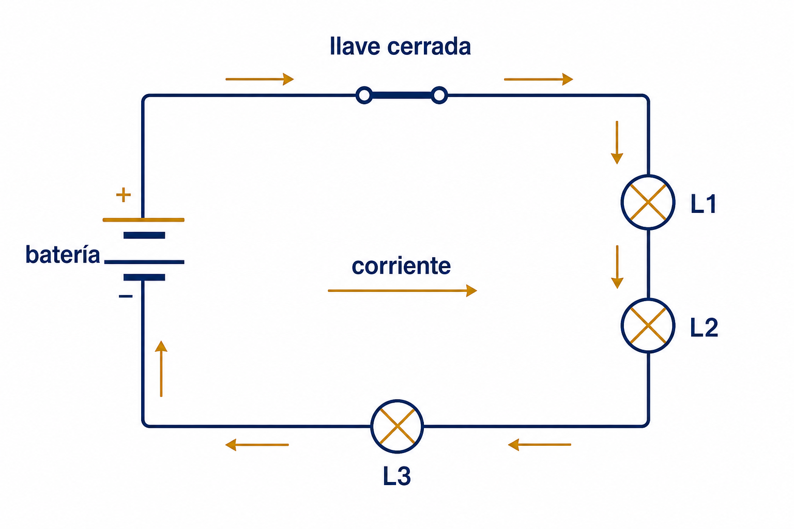
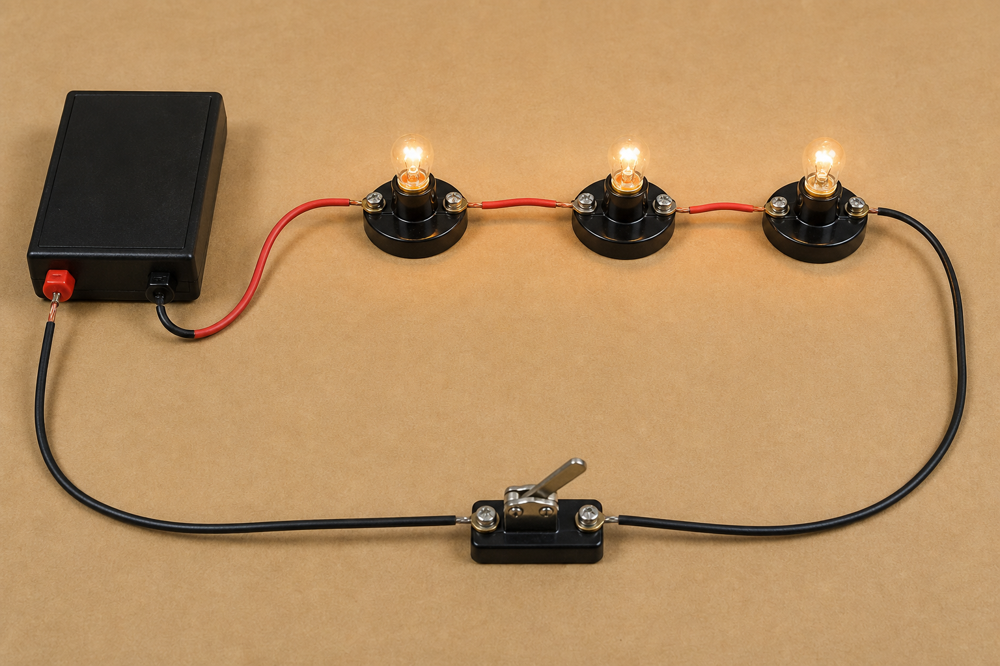

Sistemas Multi Física - Profesor Javier Pereyra
Circuitos eléctricos en serie
Apunte de estudio para comprender cómo circula la corriente, cómo se reparte la tensión y cómo se calcula la resistencia equivalente cuando los receptores están conectados uno detrás de otro.
1 Idea inicial
Un circuito en serie es como una fila india eléctrica: las cargas no tienen caminos alternativos. Para llegar de un punto al otro, deben pasar por cada elemento del circuito en el mismo recorrido.
Si colocamos varias lamparitas en serie, la corriente que atraviesa la primera también atraviesa la segunda y la tercera. No se reparte en ramas: todo ocurre en un único camino cerrado.
La analogía de la fila ayuda, pero tiene un límite: las cargas no "se gastan" al pasar por cada lamparita. Lo que se transforma es energía eléctrica en luz y calor.
2 Esquema del circuito
En el esquema se observa una batería, una llave cerrada y tres lámparas conectadas en serie. Las flechas indican el sentido convencional de la corriente.

3 Imagen realista
En el montaje realista, las tres lamparitas están conectadas una después de la otra. La llave permite cerrar o abrir el circuito completo.

4 Corriente en serie
Como hay un único camino, la corriente tiene el mismo valor en todos los puntos del circuito. Si por la batería circula \(0{,}20\,A\), por cada lamparita también circula \(0{,}20\,A\).
\(I_T\): corriente total del circuito.
\(I_1, I_2, I_3\): corriente que atraviesa cada lámpara o resistencia.
En serie, la corriente no se divide porque no existen ramas alternativas.
5 Tensión en serie
La tensión total de la batería se reparte entre los receptores. Cada lamparita transforma una parte de la energía que recibe cada carga.
\(V_T\): tensión total entregada por la fuente.
\(V_1, V_2, V_3\): caídas de tensión en cada lámpara o resistencia.
Si las lámparas son iguales, la tensión suele repartirse en partes iguales.
Por ejemplo, con una batería de \(9\,V\) y tres lámparas iguales en serie, cada una puede recibir aproximadamente \(3\,V\), siempre que se comporten de manera similar.
6 Resistencia equivalente
En serie, agregar resistencias aumenta la oposición total al paso de la corriente. Por eso, al sumar lamparitas iguales en serie, suelen brillar menos que una sola conectada a la misma batería.
\(R_{eq}\): resistencia equivalente del conjunto.
\(R_1, R_2, R_3\): resistencias de cada elemento.
La resistencia equivalente en serie siempre es mayor que cada resistencia individual.
No hay bifurcaciones. Toda la corriente pasa por todos los elementos.
Cada receptor agrega oposición al movimiento ordenado de cargas.
Si la tensión de la batería no cambia, aumentar \(R_{eq}\) reduce \(I\).
7 Sistema de unidades
| Magnitud | Símbolo | Unidad SI | En circuitos en serie |
|---|---|---|---|
| Corriente eléctrica | \(I\) | ampere \(A\) | Es la misma en todos los elementos. |
| Tensión | \(V\) | volt \(V\) | La tensión total se reparte entre los receptores. |
| Resistencia | \(R\) | ohmio \(\Omega\) | Las resistencias se suman. |
| Resistencia equivalente | \(R_{eq}\) | ohmio \(\Omega\) | Representa una sola resistencia que reemplaza a todo el conjunto. |
8 Ejemplo resuelto
Problema: tres resistencias de \(4\,\Omega\), \(6\,\Omega\) y \(8\,\Omega\) se conectan en serie a una batería de \(9\,V\). Calcula la resistencia equivalente, la corriente total y la tensión en cada resistencia.
Datos: \(R_1=4\,\Omega\), \(R_2=6\,\Omega\), \(R_3=8\,\Omega\), \(V_T=9\,V\).
Resistencia equivalente: \(R_{eq}=4\,\Omega+6\,\Omega+8\,\Omega=18\,\Omega\).
Corriente total: \(I=\frac{V_T}{R_{eq}}=\frac{9\,V}{18\,\Omega}=0{,}50\,A\).
Tensiones parciales: \(V_1=0{,}50\,A\cdot4\,\Omega=2\,V\), \(V_2=0{,}50\,A\cdot6\,\Omega=3\,V\), \(V_3=0{,}50\,A\cdot8\,\Omega=4\,V\).
Comprobación: \(2\,V+3\,V+4\,V=9\,V\), que coincide con la tensión de la batería.
Interpretación: la misma corriente atraviesa las tres resistencias, pero la tensión no se reparte igual porque las resistencias tienen valores distintos.
9 ¿Qué pasa si se abre el circuito?
Si la llave se abre, el camino se corta. Como no hay ramas alternativas, la corriente deja de circular por todo el circuito.
Lo mismo ocurre si una lamparita se quema y queda como circuito abierto: las demás también se apagan. Este comportamiento es típico de una conexión en serie.
10 Actividades
- Observa el esquema de la sección 2. Explica por qué las tres lámparas están en serie y no en paralelo.
- Un circuito tiene dos resistencias en serie: \(5\,\Omega\) y \(7\,\Omega\). Calcula la resistencia equivalente.
- Tres resistencias de \(2\,\Omega\), \(3\,\Omega\) y \(5\,\Omega\) se conectan en serie a una fuente de \(20\,V\). Calcula \(R_{eq}\) y la corriente total.
- En un circuito en serie circula una corriente de \(0{,}30\,A\). ¿Qué corriente pasa por cada una de las tres lámparas? Justifica.
- Una batería de \(12\,V\) alimenta tres lámparas iguales en serie. Si la tensión se reparte por igual, ¿qué tensión recibe cada lámpara?
- Completa la tabla para un circuito en serie:
\(R_1\) \(R_2\) \(R_3\) \(R_{eq}\) \(V_T\) \(I\) \(3\,\Omega\) \(4\,\Omega\) \(5\,\Omega\) \(24\,V\) \(10\,\Omega\) \(10\,\Omega\) \(10\,\Omega\) \(9\,V\) - Si se agrega una cuarta lámpara igual en serie y la batería sigue siendo la misma, ¿la corriente total aumenta, disminuye o queda igual? Explica.
- Un circuito en serie tiene \(R_{eq}=30\,\Omega\) y está conectado a \(15\,V\). Calcula la corriente total.
- En el ejemplo resuelto, ¿por qué la resistencia de \(8\,\Omega\) tiene mayor caída de tensión que la de \(4\,\Omega\)?
- Diseña en tu carpeta un circuito en serie con una batería, una llave y dos lámparas. Marca el sentido convencional de la corriente.
11 Preguntas para pensar
- ¿Por qué en un circuito en serie una falla puede apagar todos los receptores?
- ¿Qué diferencia hay entre decir "la corriente es la misma" y decir "la tensión se reparte"?
- Si dos lámparas iguales brillan menos al conectarlas en serie que al conectar una sola, ¿qué magnitud cambió principalmente?
- ¿Conviene conectar todas las luces de una casa en serie? Justifica desde la física y desde el uso cotidiano.
- ¿Qué mediciones harías con un multímetro para comprobar que un circuito está en serie?